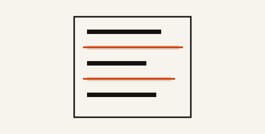
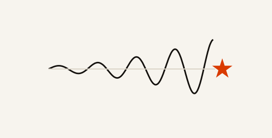

Делаю ассистентов, инструменты, игры и всякое.
Сделано с ИИ.

Материал для логопеда, собранный под одного ребёнка: каждое слово проверено по звукам, которые этому ребёнку ещё не даются.

Таймер фокуса без единой цифры на экране. Время несёт звук: это перелёт к звезде, и прибытие заканчивает сеанс.